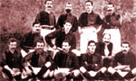
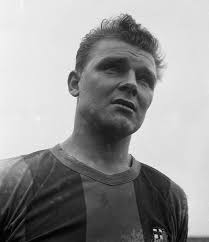
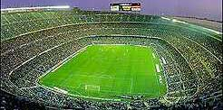

EL FC BARCELONA: MÁS QUE UN CLUB

El 29 de noviembre 1899 Joan Gamper fundo el Fútbol Club Barcelona. En recuerdo a los colores del cantón suizo de donde era originario, Gamper escogió el azul y grana. Así nació un mito, el club donde jugaron Kubala, Suárez, Cruyff, Maradona y hoy Ronaldinho. El "Barça" a lo largo del siglo XX se ha convertido en un símbolo de Barcelona y Cataluña, en donde los catalanes han proyectado su identidad como nación. Por esta razón decimos que el "Barça" es más que un club.
NACE EL MITO
El 29 de noviembre de 1899, en la sede del Gimnasio Solé, Joan Gamper se reunió con Gualteri Wild, Lluís d'Ossó, Bartomeu Terrados, Otto Kunzle, Otto Maier, Enric Ducal, Pere Cabot, Carles Pujol, Josep Llobet, John Parsons y William Parsons. Once deportistas que se reunieron para fundar un club de fútbol. Gualteri Wild fue nombrado primer presidente. El primer parido que jugaron fue en el velódromo de la Bonanova, y jugaron con un combinado que ingleses residentes en Barcelona que ganaron por 0-1. Pasando por diversos escenarios, el 14 de marzo de 1909 el Club inauguró su primer campo propio en la calle Industria con alojamiento para 6000 personas. En esta época el Barcelona consigue sus primeros éxitos: Campeonato de Cataluña de 1909-10, 1910-11, 1912-13, 1915-16, 1918-19 1919-20, 1920-21 y 1921-22 y los Campeonato de España de 1909-10, 1911-12, 1912-13, 1919-20 y 1921-22.
EL CAMPO DE LES CORTS

El 20 de mayo de 1922 se inaugura del campo de Les Corts, también conocido como 'La Catedral del fútbol', un estadio con capacidad para 30.000 espectadores que después de diferentes proyectos llego hasta los 60.000. En el 1924 el club ya tenia 12.207 socios y un amplio número de aficionados que pusieron las bases de la masa social actual. La temporada 1928-29 se celebra la primera edición de la liga española, que ganará el Barça cerrando de forma brillante una época repleta de títulos.
LOS AÑOS 30
Joan Gamper morirá el 30 de julio de 1930. Este mal comienzo de la década, fue un mal augurio que se confirmo en sucesivas crisis institucionales: bajas de socios, malos resultados deportivos y la presión política de los franquistas. La Guerra Civil de 1936 tiene consecuencias funestas para la entidad. Josep Suñol, presidente del Club es asesinado por los soldados franquistas cerca de Guadalajara, sin embargo la entidad continua viva y en el 36 el Barça hace una gira por Méjico y Estados Unidos que salva la economía del Club. En marzo del 1938, una bomba lanzada por los fascistas sobre la sede social del FC Barcelona provoca graves destrozos. Ya en el 39, las tropas franquistas crean muchos problemas para el Club que se ha convertido en un símbolo de los catalanes, aunque en aquel momento, tan sólo le quedaban 3.486 socios..
LA COPA LATINA
En la década de los cuarenta el Barça, poco a poco, va renaciendo de sus cenizas a pesar de las dificultades coyunturales. En junio del 1943, acontece el escándalo de Chamartín, una derrota sufrida en terreno madridista condicionada por las amenazas arbitrales y policiales, que provoca la renuncia de Piñeiro, el presidente franquista, pero honesto. Llegan tiempos mejores y se ganan las Ligas 1944-45, 1947-48 y 1948-49 y de la Copa Latina de 1949, una competición precedente de la Copa de Europa que es el primer éxito internacional del FC Barcelona. Estamos en la época de César, Basora, Velasco, Curta, los hermanos Gonzalvo, Seguer, Biosca o Ramallets. El Barça celebra 50 años y tiene 24.893 socios
KUBALA
Nació el 10 de junio de 1927 en Budapest y la Segunda Guerra Mundial marcó su juventud, condicionando su evolución como jugador. Hombre de profundas convicciones religiosas, este "barcelonés de Budapest", como lo bautizó un periodista catalán, tenía fama de generoso y familiar. Debutó en la Primera División húngara con el Ferencváros. Emigró a Checoslovaquia y se alistó en las filas del SK Slovan Bratislava, donde jugó 6 veces y marcó 4 goles. Volvió a su país para fichar por el Vasas de Budapest. Después de disputar un partido en la capital húngara, se despidió de su madre sin confesarle que había decidido cruzar el Telón de Acero. Acompañado de otros cuatro compañeros de equipo y de varias personas más, cruzó la frontera con Austria en un camión con matrícula soviética. Tardó años en volver a ver su madre. Una vez en Occidente los problemas continuaron. La federación húngara le acusó de delincuente y estafador, y la FIFA le suspendió durante un año. Durante ese período, el jugador se alistó en el Aurora Pro Patria 1919, el único equipo de Italia que le dio garantías económicas. Kubala acabó en un campo de refugiados en Cinecittà, donde ya lo acompañaba parte de su familia. Entre otros, se encontraba su cuñado, el entrenador Ferdinand Daučík, el cual fundaría el Hungaria, un equipo integrado por exiliados húngaros que viajó por Europa y a finales de 1950 también a América del Sur, muy afamado por su gran juego dirigido y organizado en su Ladislao Kubala llego a Barcelona en junio de 1950, convirtiendo al FC Barcelona en un equipo intratable gracias a una delantera mágica: Basora, César, Kubala, Moreno y Manchón. Entre 1951 y 1953, el Barça gana todas las competiciones en las que participa (Ligas 1951-52 y 1952-53 y las Copas 1950-51 1951-52 y 1952-53). De este periodo dorado , destaca la temporada 1951-52, la de las Cinco Copas: Liga, Copa, Copa Latina, Eva Duarte y Martini Rossi.
EL CAMP NOU, 1957
Kubala dejo pequeño el camp de Les Corts y Francesc Miró-Sans, impulsa la construcción del Camp Nou, que se inaugura el 24 de septiembre de 1957. El nuevo estadio tiene capacidad para 90.000 espectadores. Se ganan las Ligas 1958-59 y 1959-60 y las Copas de Ferias 1957-1958 y 1959-60 conducidos por el entrenador Helenio Herrera y el sello de jugadores como Kocsis, Czibor, Evaristo, Kubala, Eulogio Martínez, Suárez, Villaverde, Olivella, Gensana, Segarra, Gràcia, Vergés y Tejada. La década de los sesenta es un periodo de crisis deportiva (sólo se ganan las Copas 1963 y 1968 y la Copa de Ferias 1966) sin embargo es la época donde nace la frase 'más que un club' . El Barça está por encima de la coyuntura deportiva: la adhesión a los colores barcelonistas es una manera de defender la identidad nacional catalana.
EL BARÇA DE HOY
Actualmente, el FC Barcelona es una entidad deportiva con secciones de baloncesto, balonmano, hockey patines, atletismo, hockey hielo, patinaje artístico, fútbol sala, rugby, béisbol, voleibol y fútbol femenino. Además, El equipo de fútbol es el único de Europa que ha jugado de forma ininterrumpida en las competiciones europeas desde 1955. Hoy el número de socios es de 105.706, y el de peñas, a 1.508.
leyendas futbol club Barcelona
.jpg)
Rafael Nadal durante Roland Garros 2017
Mas información..jpg)
Rafael Nadal durante Roland Garros 2017
Go somewhereRafael Nadal durante Roland Garros 2017
Go somewhere